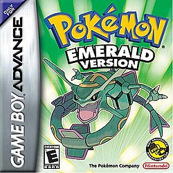
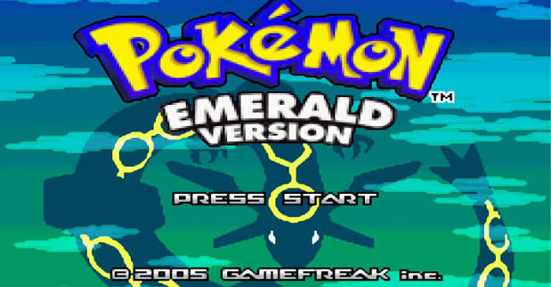

curiosidade sobre pokemon emerald
Pokémon Emerald Version é um jogo eletrônico de RPG de 2004, desenvolvido pela Game Freak, publicado pela The Pokémon Company e pela Nintendo para o Game Boy Advance. Foi lançado pela primeira vez no Japão em 2004 e mais tarde lançado internacionalmente em 2005.

🌟 A Batalha da Fronteira
Substituindo a simples Battle Tower (Torre de Batalha) de Ruby/Sapphire, a Battle Frontier introduziu 7 instalações únicas. Nelas, o jogador não depende apenas da força bruta de seus monstros, mas também de sorte, escolhas estratégicas (como alugar Pokémon na Battle Factory) e conhecimento de mecânicas obscuras.
🔄 Clonagem Infinita
Um dos segredos mais explorados (e úteis) pelos jogadores é um glitch (falha de programação) no Centro de Trocas da Batalha da Fronteira. Ao salvar o jogo no balcão e depositar Pokémon no PC durante a conexão, é possível clonar tanto os monstros quanto os itens raros que eles estão segurando.

⚔️ Iniciais de Johto e os Fósseis
Diferente dos jogos anteriores, em Emerald você é recompensado por completar a Pokédex de Hoenn (sem contar os Pokémon de evento). Como "prêmio", o Professor Birch lhe dará a opção de escolher um dos três iniciais clássicos da Geração II: Chikorita, Cyndaquil ou Totodile. Além disso, você pode obter ambos os fósseis do deserto.
🐾 Batalhas em Dupla Expandidas
As batalhas de 2 contra 2 já existiam na Geração III, mas Emerald deu um passo além. Pela primeira vez na série, caminhar no campo de visão de dois treinadores ao mesmo tempo no "mundo aberto" fará com que eles te desafiem simultaneamente para uma intensa Batalha em Dupla.
💧 A Lenda da Ilha Miragem (Mirage Island)
Um dos maiores mistérios do jogo é a Mirage Island, uma ilha que só aparece na Rota 130 em dias específicos, dependendo de um valor numérico oculto (gerado diariamente) que deve coincidir com o "número de personalidade" de algum Pokémon na sua equipe. Encontrá-la é um feito raro e dá acesso a itens especiais e ao Pokémon Wynaut selvagem.
🤫 Encontros e Diálogos Alternativos
Os desenvolvedores criaram cenários para o improvável: é possível avançar no início do jogo em Rustboro Town sem pegar o seu PokéNav ou enfrentar sua rival, dependendo da rota e das derrotas que você tiver antes de chegar na cidade.
Em Ruby e Sapphire, uma casa em Mossdeep continha um erro de texto onde o NPC afirmava ter um Delcatty, mas o sprite na tela era de um Skitty. Emerald corrigiu esse detalhe.
A Ilha Miragem é considerada uma das coisas mais difíceis de se conseguir em todo o jogo.